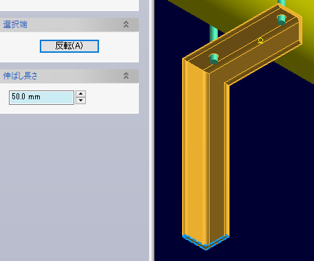
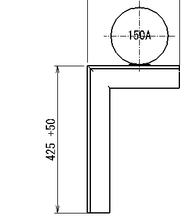

配管サポートソリッドの端部に伸ばし長さを設定し、配管サポート一品図や配管サポート集計といったコマンドの出力結果に反映されるようにします。
要素検索コマンドを利用して現合材属性を付加ずみの配管サポートソリッドを検索できます。
配管サポートソリッドのいずれか一端を選択し、伸ばし長さを指定してOKボタンをクリックすると属性が付与されます。
伸ばし長さを設定したい配管サポートソリッドの端部近くをピックしてください。選ばれたほうの端部断面がプレビューとして太い線で表示されます。
反転ボタンをクリックすると、反対側の端部を選択したことになります。
伸ばし長さを入力します。すでに伸ばしを設定ずみのソリッドを選択すると、設定済みの長さが表示されます。